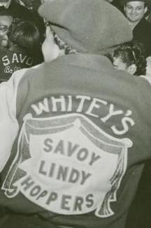

Compiled by Anne Dagenais
March 2019
The history of Lindy Hop is incredibly complex, nuanced, and not without controversy. This page is an attempt to share information and resources on the history of this artform. It is by no means exhaustive, but at the very least it is a good starting point for anyone seeking to dive into the roots of this fantastic dance.
What is Lindy Hop
Lindy Hop is a Black American dance that started in Harlem, NYC at the end of the 1920s. It happened in the context of the Harlem Renaissance: the cultural explosion of the Black diaspora after the mass migration of Black Americans from the South to the North.

Lindy Hop evokes in turn the rhythm of African-American work songs, gospel corporeality, and the formality of European ballroom dances. The music and the dance have been shaped by the experience of oppression, slavery, and segregation. However, the Lindy Hop (also known as the Jitterbug) became mostly an emblem of American popular and national culture: appropriated by Hollywood and the cultural industry at large as early as the 1930s. As a result, it is often known now as the dance of GIs and the “liberation” of Europe by Allied forces. The Africanity of Lindy Hop has almost been erased.1 This is why it is important to highlight it and celebrate it.
Why is it called the Lindy Hop?
Mattie Purnell, 1929
The creation date of the dance is untraceable. It is believed that the “Lindy Hop” received its name during a dance marathon in June 1928 at the Rockland Palace in Harlem. There, dancers from the Savoy Ballroom, George “Shorty” Snowden and Mattie Purnell, were particularly distinguished by their creative, fast and innovative steps, attracting the eye of a Fox Movietone News reporter.
During one of these contests, Shorty — as he remembers it — decided to do a breakaway; that is, flinging his partner out and improvising a few solo steps on his own. In the midst of the monotony of the marathon, the effect was electric, and even the musicians came to life. Shorty had started something.
The story goes that in response to the journalist’s curiosity, Snowden spontaneously dubbed his creation “Lindy Hop”, referring to the aviator Charles Lindbergh who had just made the first non-stop transatlantic flight solo in May 1927.2
The Roots
Lindy Hop was danced predominantly by Black dancers starting in the 1920s. Many of them lived in Harlem, where there were dance clubs such as the Savoy and Alhambra ballrooms. Lindy Hop emerged as a defiant, joyous response to financial hardship caused by the Great Depression, harsh living conditions, and systemic racism. The dance evolved out of several forms of social dance that preceded it, such as the Cakewalk, the Breakaway, and partnered Charleston.
The Savoy
The Savoy Ballroom was Lindy Hop’s most famous home. In a time of racial segregation and strife, the Savoy was one of the most culturally and racially integrated of institutions, and its fame was international.3 Bands headed by Chick Webb (the resident band leader), Count Basie, Duke Ellington, and Benny Goodman performed there, as well as legendary singers Ella Fitzgerald and Billie Holiday.

World-class dancers like “Shorty” George Snowden, “Big Bea”, and second-generation dancers such as Al Minns, Leon James, Frankie Manning and Norma Miller would throw down at the Savoy till the early morning hours.


Whitey’s Lindy Hoppers4 were also formed at the Savoy, when Savoy bouncer Herbert “Whitey” White brought some of the best dancers together and became their de facto agent. These dancers went on to be ambassadors of the dance on film, stage, and through worldwide tours.
 
A Lindy Hop Timeline
- ???- 1920s - Precursors: DNA of many different forms of black dance appear in Lindy Hop. This includes forms of vernacular jazz dance such as tap, partnered Charleston, the cakewalk, and the Texas Tommy (a dance that originated in San Francisco).
- 1929 - Lindy Hop appears on film: The breakaway, a close precursor to Lindy Hop, can be seen in footage from the film After Seben (1929).5 The dance, at this point, resembles a sort of Lindy Hop/Charleston hybrid.
- 1930s-1940s - Lindy Hop in Hollywood: Dean Collins popularizes LA-style Lindy Hop, while Whitey’s Lindy Hoppers perform in films like A Day at the Races (1937) and Hellzapoppin (1941). The dancers are often filmed apart from the rest of the film, in the event that Southern audiences ask that scenes with the black dancers be cut.
- 1940s and onward - Mainstream success and offshoots: While WWII takes famous Lindy Hoppers and musicians to war, white dancers like Arthur Murray develop simplified versions like the Jive and the East Coast Swing. Meanwhile, black musicians move jazz to bebop, and the dance evolves with it.
- 1980s to today - Resurgence: A group of Swedish dancers see Lindy Hop on film, find the folks who pioneered it — including Frankie Manning and Al Minns , and invite them to show the new generation how it’s done. International dance scenes form. Meanwhile, Black dancers develop new forms of social dance, such as Hip Hop and House. The Lindy Hop we dance today is very different from the Lindy Hop of the 1930s. It’s influenced by the original dancers, the dances that sprung up around and after it — Carolina Shag, West Coast Swing, Boogie Woogie, St. Louis Shag, Balboa and more — and by those who teach and dance it. While dancers of color remain important contributors to the dance, the international scene now looks a lot whiter and more affluent than where it began. It’s important that we honor the past while we continue to bring the dance into the future. Lindy Hop is now a flourishing community with tens of thousands of dancers worldwide.6
Resources
20 Original Lindy Hoppers every swing dancer should know about7: https://www.youtube.com/watch?v=fy2dR60-q1M
The Lindy by Margaret Batiuchok NYU Masters Thesis 16 May 1988 History of Swing Dancing: https://www.scribd.com/doc/36181005/The-Lindy-by-Margaret-Batiuchok-NYU-Masters-Thesis-16-May-1988-History-of-Swing-Dancing
2 Idem, pp. 229-30.
3 Commemorative plaque unveiled on 26 May 2002 by Frankie Manning and Norma Miller in Harlem: https://upload.wikimedia.org/wikipedia/commons/a/a2/Savoyplaque_large.jpg
4 https://en.wikipedia.org/wiki/Whitey%27s_Lindy_Hoppers
5 After Seben clip with commentary: https://www.youtube.com/watch?v=MtuZeI3n6gM This early sound short was set in a Harlem nightclub and features white vaudeville comic and dancer James Barton performing in blackface. Blackface is a form of theatrical make-up used predominantly by non-black performers to represent a caricature of a black person. The practice gained popularity during the 19th century and contributed to the spread of racial stereotypes. Early in the 20th century, blackface branched off from the minstrel show and became a form in its own right. In the United States, blackface had largely fallen out of favor by the turn of the 21st century, and is now generally considered racist, although many people continue to use it. https://en.wikipedia.org/wiki/Blackface
6 This entire section is taken from the website Yehoodi, managed by Rik Panganiban, where you can find more resources on the history of Lindy Hop: http://www.yehoodi.com/history?fbclid=IwAR3OpFVCULx4R-XK09g7H6FmJWBsyLyvbEAXM-1c_8etUIqAUiZ36fgHpIg
7 It is important to note the stereotypical nature of the facial expression performed by Leon James at 2:53 and critically reflect on its performance today: https://thesocietypages.org/socimages/2011/07/05/race-appropriation-lindy-hop-how-to-honor-our-heroes/